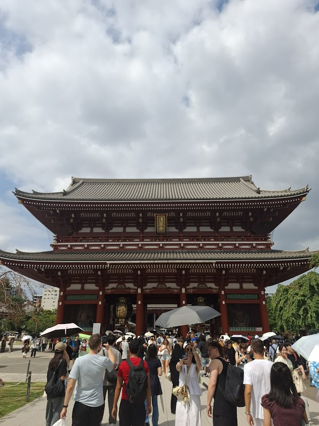
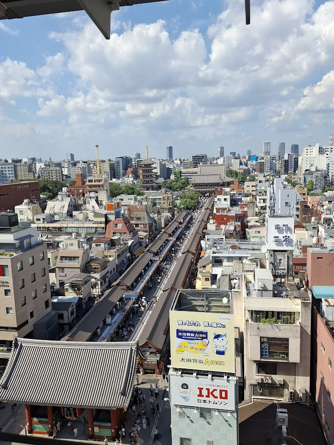
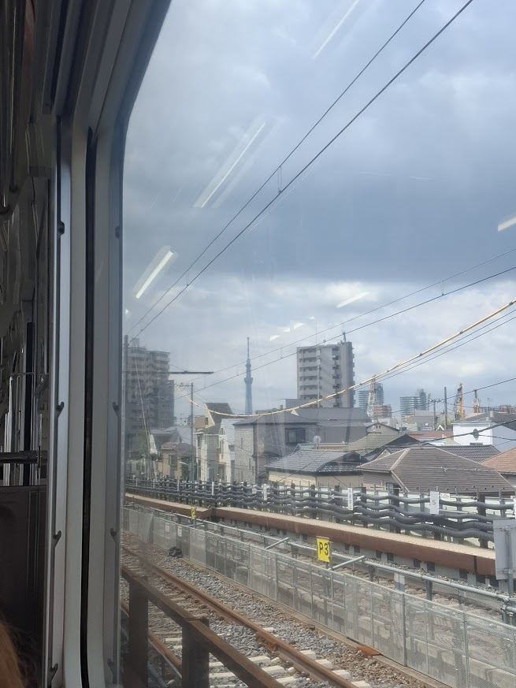

台東區位於東京23區東部，保留了濃厚的下町風情與文化氣息，有著名的淺草寺與上野公園。

淺草寺（雷門）
東京都內歷史最悠久的寺院，巨大的紅色燈籠「雷門」與仲見世通商店街是必訪地標，充滿傳統江戶風情。
旅遊照片紀錄


台東區位於東京23區東部，保留了濃厚的下町風情與文化氣息，有著名的淺草寺與上野公園。

東京都內歷史最悠久的寺院，巨大的紅色燈籠「雷門」與仲見世通商店街是必訪地標，充滿傳統江戶風情。

